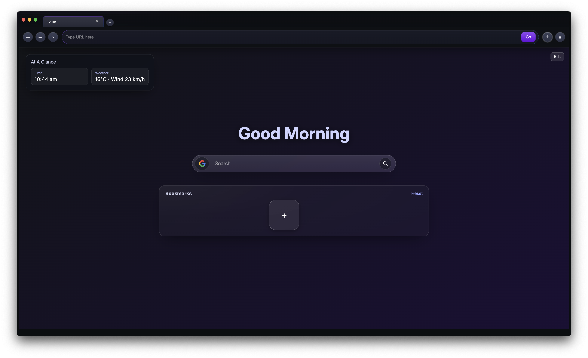
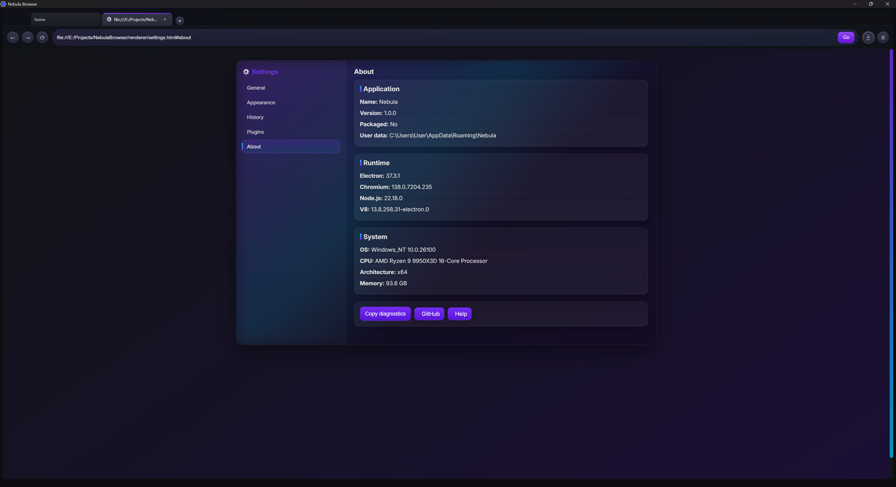
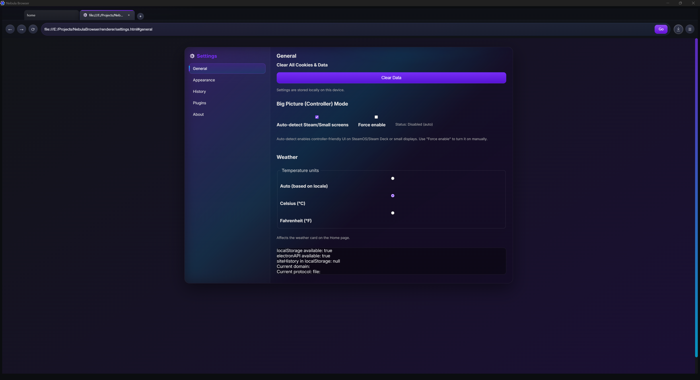
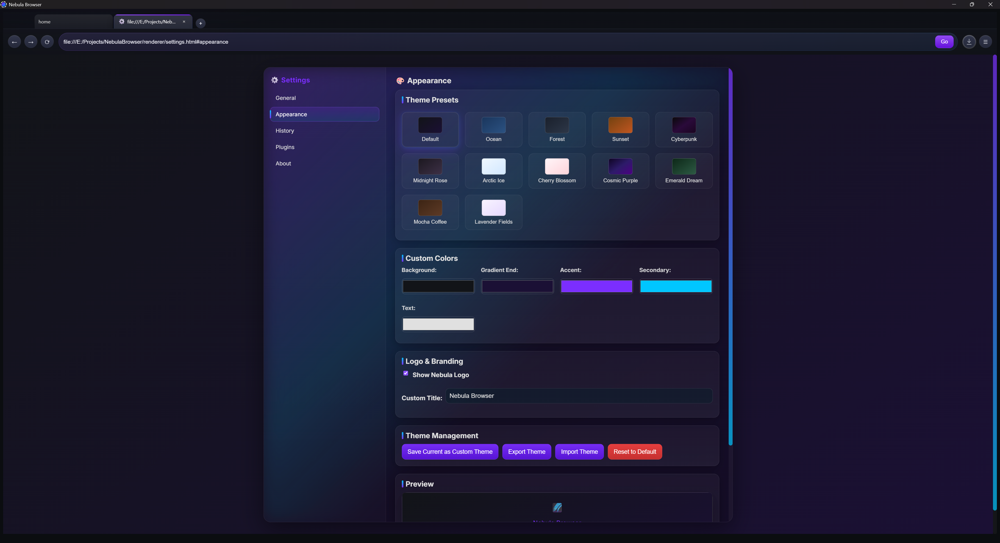
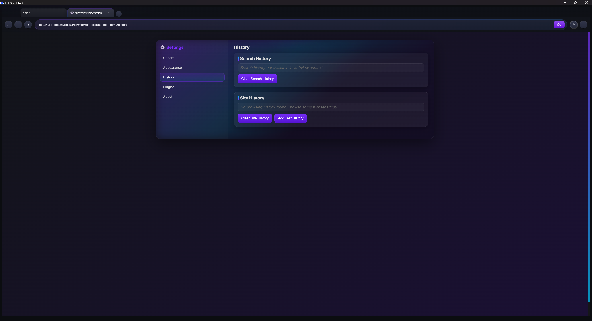

Nebula Browser
A desktop web browser designed for SteamOS, Steam Deck, and controller-first navigation. Fast, responsive, and built for the living room.
What Is Nebula Browser?
Nebula Browser is a purpose-built web browser designed from the ground up for SteamOS, Steam Deck, and controller-first interaction. Rather than trying to force a traditional mouse-and-keyboard browser onto a gamepad, Nebula Browser reimagines what web browsing can be when designed for modern hardware and input methods.
Built on proven web technologies with a focus on performance, accessibility, and couch-friendly interaction, Nebula Browser proves that controller-first desktop applications can be practical, fast, and compelling. It serves as both a practical tool for Steam Deck users and a flagship application for the broader Nebula ecosystem.
Key Features
Controller-Native Navigation
Every interaction is optimized for gamepad input. Menus, tabs, and page navigation feel natural with a controller, no keyboard required.
Big Picture Friendly
Designed to work seamlessly with Steam's Big Picture Mode. Large, readable text and touch-friendly interface elements work from your couch.
Performance Optimized
Built with handheld hardware in mind. Fast startup, responsive navigation, and efficient resource usage ensure smooth browsing on Steam Deck.
Open Source
Transparent development, community contributions, and a commitment to open standards. Inspect the code, report issues, and help shape the future.
Accessibility First
Built with diverse abilities and input methods in mind. Alternative interaction modes ensure Nebula Browser works for everyone.
Part of Nebula Project
Built on shared Nebula Core libraries and design systems. Nebula Browser is the flagship of a broader ecosystem of controller-friendly desktop apps.
Development & Contributions
Core Development: Responsible for the main application logic, feature implementation, and architecture decisions that make controller-first browsing possible.
UI/UX Design: Designed the clean, intuitive interface with a focus on controller navigation, readability at distance, and accessibility.
Community Management: Maintaining the repository, addressing issues, reviewing contributions, and gathering user feedback to drive the project forward.
Screenshots





Get Involved
Nebula Browser is open source and welcomes contributions. Whether you're interested in using the browser, reporting bugs, suggesting features, or contributing code, there's a place for you.
Check out the GitHub repository to explore the code, review the roadmap, and get started contributing.
 Get it on Steam
Get it on Steam
 Explore on GitHub
Explore on GitHub